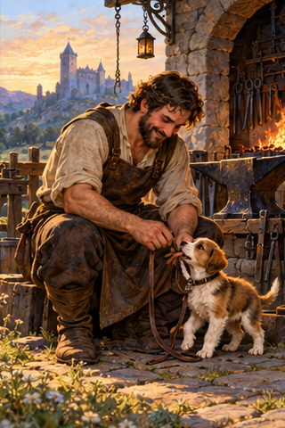
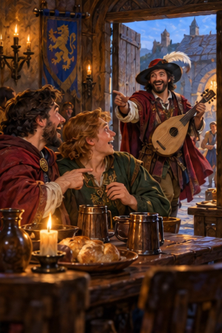
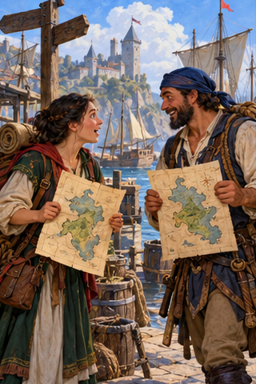
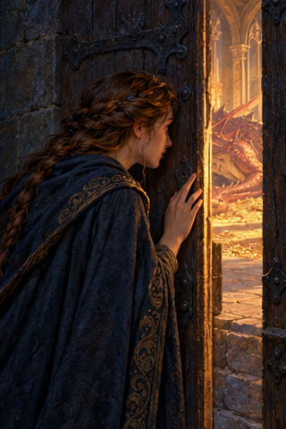
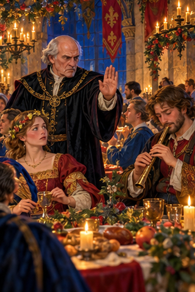
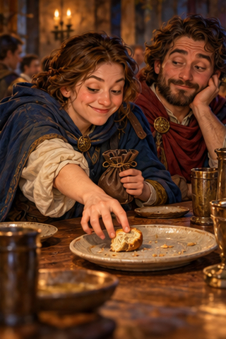
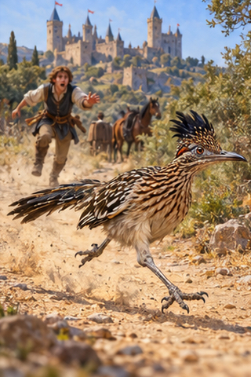
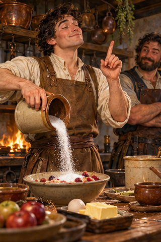
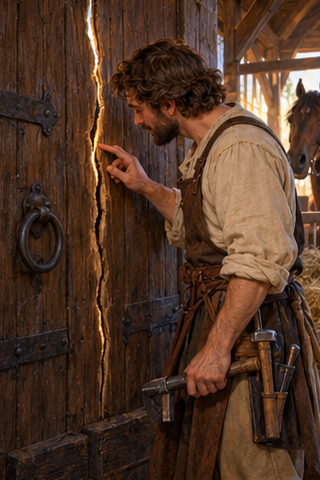

PDD Batch 23 — review only
Ten 320×480 portraits, in manifest order. Not installed.
Original composite1. PDD 247 — Leer fue siempre una forma de felicidad clandestina.
pdd247.jpg
2. PDD 248 — Amar es aceptar que algo nos importe lo suficiente como para transformarnos
pdd248.jpg
3. PDD 249 — Hablando del rey de Roma y por la puerta asoma
pdd249.jpg
4. PDD 250 — Andábamos sin buscarnos pero sabiendo que andábamos para encontrarnos
pdd250.jpg
5. PDD 251 — Entreabrir
pdd251.jpg
6. PDD 252 — Aguafiestas
pdd252.jpg
7. PDD 253 — Lonchafinista
pdd253.jpg
8. PDD 254 — Correcaminos
pdd254.jpg
9. PDD 255 — Sabelotodo
pdd255.jpg
10. PDD 256 — Raja
pdd256.jpg